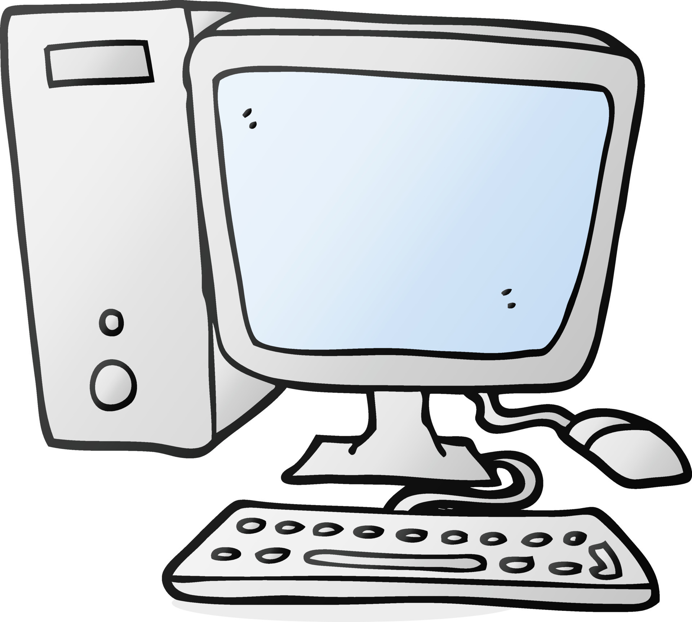

La tecnologia forma parte de nuestra vida diaria.
Nos permite comunicarnos, estudia, trabajr y
encontrar soluciones a diferentes problemas.

las computadoras son herramientas que permiten
procesar informacion, crear documentos, desarrollar
programas y realizar diversas actividades escolares.
Aprender a utilizar correctamente una computadora
ayuda a desarrollar habilidades utiles para la escuela
y para el futuro profesional.
Algunos dispositivos que utilizamos frecuentemente son:

Puedes consultar informacion adicional sobre
computadoras, programacion y herramientas digitales
en los sugientes sitios web.